▲ LED 조명과 미디어아트로 꾸민 광명동굴 "빛의 공간". 동굴 안은 평소에도 빛을 주제로 한 연출이 이어진다 사진=한국관광공사
경기 광명시의 폐금광 광명동굴이 10월 16일(금)~17일(토) 이틀 동안 제4회 광명동굴 빛 축제를 연다. 주제는 "빛의 숲, 깨어나는 생명"이고, 광명도시공사가 주최한다. 축제 시간은 11:00~21:00, 밤하늘에는 드론 1,000대가 하루 두 차례 뜬다. 문제는 이틀뿐이라는 점이다. 동굴 주변 주차장이 넉넉하다고 보기 어려운 만큼, 자차로 간다면 주차장과 시간표를 먼저 정해 두는 편이 낫다. 이 글은 광명도시공사 보도를 받아 쓴 지역 매체 기사, 광명시 광명동굴 누리집, 한국관광공사 자료를 근거로 정리했고, 확인하지 못한 항목은 따로 표시했다.
1. 한눈에 보기 — 개최는 확정, 일정은 이틀
▲ LED 조명과 미디어아트로 꾸민 광명동굴 "빛의 공간". 동굴 안은 평소에도 빛을 주제로 한 연출이 이어진다. 사진=한국관광공사
제4회 빛 축제 개최는 광명도시공사 보도를 받아 쓴 여러 지역 매체(광흥타임즈, 산경일보, 웹이코노미, 뉴스인광명 등)가 같은 내용으로 전한다. 한국관광공사 TourAPI에도 "광명동굴 빛 축제" 항목과 2026년 10월 16~17일 일정이 적힌 포스터가 올라 있다. 아래 표는 이 보도들이 공통으로 적은 내용이다.
| 구분 | 내용 |
|---|---|
| 기간 | 2026년 10월 16일(금)~17일(토), 2일간 |
| 운영 시간 | 매일 11:00~21:00 |
| 장소 | 광명동굴 일원(경기 광명시 가학로85번길 142) |
| 주제 | "빛의 숲, 깨어나는 생명" — 탄소중립·생태 보전 메시지 |
| 주최 | 광명도시공사 |
| 개막식 | 10월 16일 19:00 |
| 드론 라이트쇼 | 드론 1,000대, 하루 2회 |
| 지난 회차 | 제3회는 2025년 10월 24~25일(금·토)에 열렸다. 올해도 금·토 구성이다. |
| 공식 안내 | 광명동굴 누리집(gm.go.kr/cv)·SNS |
ℹ️ 보도 기준 정보다
개최 일정은 여러 매체가 같은 보도를 근거로 전하고 있다. 다만 우천 시 대응이나 일정 변경 여부는 보도에 나와 있지 않다. 출발 전에 광명동굴 누리집과 SNS 공지를 확인하자.
| 항목 | 결과 | 근거 |
|---|---|---|
| 드론쇼 시각 | 16일 19:30·21:00, 17일 19:00·20:40 | G밸리타임스·광흥타임즈 보도(포스터 판독본은 다를 수 있음) |
| 축제 프로그램 입장 | 무료로 표기 | 한국관광공사 축제 정보 |
| 동굴 입장료·18시 이후 개방 | 확인 못 함 | 누리집 첫 화면·공지에 별도 안내 없음 |
| 주차 요금·감면 | 평소 기준 확인(경차 포함 50% 감면) | 광명시 누리집 길 안내 |
| 축제 기간 주차 변경 | 확인 못 함 | 제2주차장 푸드존 보도만 있음 |
| 자율주행 셔틀 | 10월 7일 운행 예정, 시간표 확인 못 함 | G밸리타임스 인용 보도 |
공식 안내는 광명동굴 누리집에서 볼 수 있다. 광명동굴 누리집 바로가기
2. 프로그램과 시간표 — 드론쇼는 두 날 시각이 다르다
▲ 한국관광공사에 올라온 제4회 광명동굴 빛 축제 포스터. 해상도가 낮아 하단 시간표는 판독이 어렵다. 사진=한국관광공사
가장 헷갈리기 쉬운 부분은 드론쇼 시각이다. 보도에 따르면 16일(금)은 19:30과 21:00, 17일(토)은 19:00과 20:40에 각각 드론 1,000대가 날아오른다. 둘째 날이 30~20분 일찍 시작하므로 날짜별로 따로 기억해 두어야 한다. 한국관광공사에 올라온 포스터의 하단 시간표는 저해상도라 정확히 읽히지 않으며, 두 날 모두 19:00과 21:00으로 읽히는 부분이 있어 보도와 어긋날 수 있다. 이 글에서는 보도 기준 시각을 쓰되, 현장 공지를 최종 기준으로 삼기를 권한다.
| 시간 | 10월 16일(금) | 10월 17일(토) |
|---|---|---|
| 11:00~18:00 | 업사이클링 체험존(보도 기준) | 업사이클링 체험존(보도 기준) |
| 오후 | 푸드존(제2주차장), 포스터상 15:00~21:00로 읽힘 | 푸드존, 포스터상 11:00~21:00로 읽힘 |
| 19:00 | 개막식 — 오프닝 공연, 환경보호 실천서약, DJ 지니 축하공연, ESG 환경 퀴즈쇼 | 드론쇼 1회차 |
| 19:30 | 드론 라이트쇼 1회차(개막식 진행 중 시작, 보도 기준) | — |
| 20:40 | — | 드론 라이트쇼 2회차 |
| 21:00 | 드론 라이트쇼 2회차, 축제 종료 | 축제 종료 |
| 상시 | "빛의 광장" 버스킹 공연(시간표 미확인) | "빛의 광장" 버스킹 공연(시간표 미확인) |
체험 부스는 박스빌리지·새싹공방에서 업사이클링 체험을 운영한다고 보도됐고, 다른 보도는 폭포광장과 카페동굴에서도 11:00~18:00에 체험이 열린다고 전했다. 체험별 요금과 선착순 여부는 확인하지 못했다. 드론쇼를 보기 좋은 위치도 보도에서 밝혀지지 않았으니 현장 안내판을 확인하자.
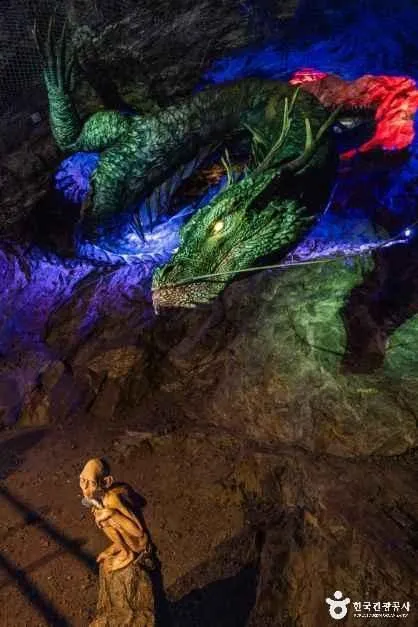
▲ 동굴 벽면에 비추는 조명 연출 사례. 축제 프로그램이 아니라 상설 야간 연출을 담은 사진이다. 사진=한국관광공사
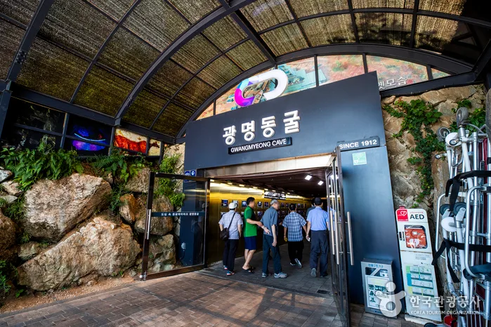
▲ 광명동굴 입구. 낮 시간 관람은 이 입구로 들어가며, 축제는 동굴 일원에서 열린다. 사진=한국관광공사
3. 자차로 가는 법 — 내비 목적지와 주차장
광명시 광명동굴 누리집의 길 안내는 자가용 이용 시 광명IC 또는 광명역IC에서 동굴 방면 안내를 따르라고 하고, 내비게이션에는 "광명동굴" 또는 "광명 자원회수시설"을 입력하라고 안내한다. 주소는 경기도 광명시 가학로85번길 142이다. 주차장은 서쪽 출입구 쪽 제1·2주차장과 동쪽 출입구 쪽 제3주차장으로 나뉜다.
| 주차장 | 위치 | 요금 |
|---|---|---|
| 제1·2주차장 | 서쪽 출입구 | 대형 4,000원 / 중·소형 3,000원 / 경차 1,500원 |
| 제3주차장 | 동쪽 출입구 | 최초 30분 800원, 이후 10분마다 300원(관광 안내 사이트 기준) |
| 감면 | — | 전기·하이브리드·경차 50%, 장애인·국가유공자 100%, 광명시 다자녀(막내 15세 이하) 2자녀 50%·3자녀 이상 100%(누리집 길 안내 기준, 증빙 필요) |
| 수용 대수 | — | 올해 수치는 확인하지 못함(2025년 제3회 때는 전용 주차장 700대 규모라는 보도가 있었으나 그해 정보다) |
| 축제 기간 요금 | — | 올해는 확인하지 못함(누리집·보도에 별도 언급 없음). 2025년 제3회 때는 행사 기간 무료 개방이라고 전한 매체가 있었지만 올해 적용은 알 수 없다 |
주의할 점은 제2주차장이다. 보도에 따르면 이번 축제의 푸드존이 제2주차장에 차려진다. 주차장 일부가 행사장으로 쓰이면 주차 가능한 면수가 줄 수 있다는 점은 보도에 없는 추정이다. 포스터에도 행사장 주변 주차 공간이 협소하니 셔틀버스를 이용해 달라는 취지의 문구와 셔틀 정보 QR코드가 실려 있는 것으로 보인다. 다만 저해상도 이미지라 세부 문구는 확정하지 못했다.
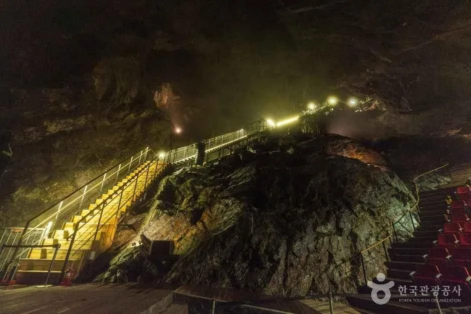
▲ 동굴 안 관람로는 계단이 많다. 입구까지의 거리와 별개로 내부 이동 체력을 생각해야 한다. 사진=한국관광공사
✅ 자차 방문 요령
· 내비는 "광명동굴" 또는 가학로85번길 142로 설정한다
· 개막식·드론쇼가 있는 저녁(19:00 전후) 전에 주차를 마치는 편이 낫다. 시간대별 혼잡은 공식 발표가 없고, 이 판단은 일반적인 야간 행사 경향에 따른 것이다
· 제1·2주차장이 가득 차면 제3주차장(동쪽 출입구)을 고려한다. 다만 축제 기간 출입 동선은 확인하지 못했다
· 전기차·하이브리드·경차는 요금 50% 감면이 안내돼 있으니 증빙을 준비한다
· 귀가 때는 드론쇼 직후 출차가 한꺼번에 몰릴 수 있으므로 마지막 회차 직후 이동은 피하고 20~30분 여유를 두는 편이 낫다(추정)
4. 대중교통과 셔틀 — 자차가 어려울 때
| 수단 | 내용 | 확인 상태 |
|---|---|---|
| 지하철+버스 | 7호선 철산역 2번 출구에서 17번 버스, 제1주차장 직행 | 누리집 안내 |
| KTX | KTX광명역 8번 출구에서 77번 버스 | 누리집 안내 |
| 자율주행 셔틀 | 철산역~광명동굴 구간, 10월 7일부터 운행 예정이라는 보도(G밸리타임스 인용 내용), 대중교통 이용 권장 | 운행 시간·요금·정류장 미확인(10월 4일 기준 공식 시간표 못 찾음) |
| 축제 전용 셔틀 | 포스터에 셔틀 QR 안내가 있는 것으로 보임 | 내용 판독 못함, 방문 전 공식 확인 필요 |
이틀 모두 21:00 전후에 마무리되는 행사이므로 대중교통을 쓰려면 막차 시간이 더 중요하다. 버스·셔틀의 막차 시각은 이번 조사에서 확인하지 못했다. 철산역~광명동굴 자율주행 셔틀 역시 축제 기간 운행 시간표를 찾지 못했으니, 귀가 방법으로 쓸 예정이라면 사전에 확인해야 한다.
5. 입장료와 운영시간 — 축제 기간 요금은 미확인
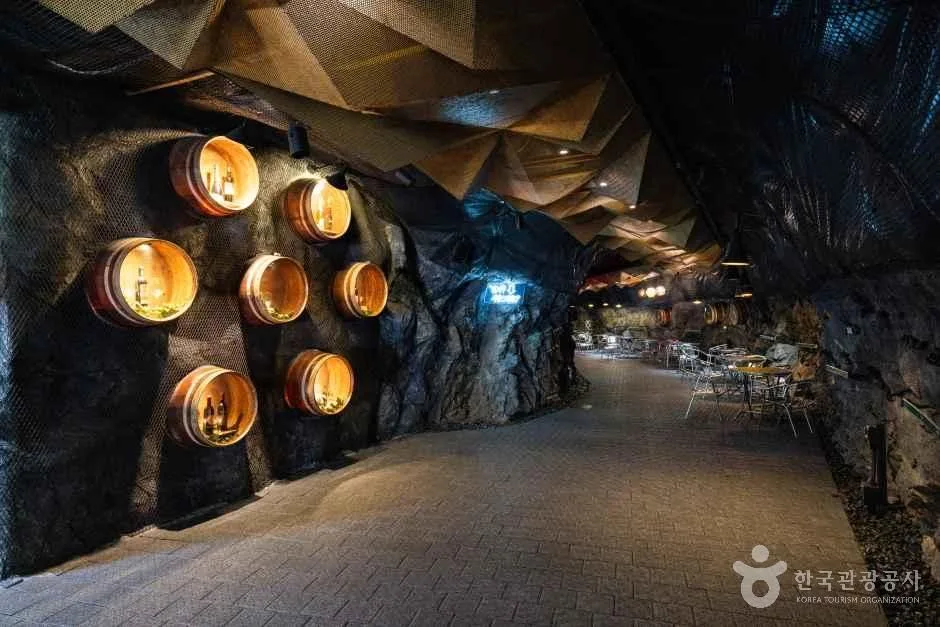
▲ 광명동굴 와인동굴 구간. 동굴 안은 여러 연출 구간으로 이어진다. 사진=한국관광공사
10월 4일 기준으로 다시 확인한 결과, 한국관광공사 축제 정보(2026년 10월 16~17일 항목)에는 입장료가 "무료(광명동굴 입장료 및 시설 이용료는 홈페이지 참고)"로 적혀 있다. 즉 축제 프로그램 자체는 무료로 안내되지만 동굴 안으로 들어가는 입장권은 별개일 수 있다는 뜻이다. 다만 올해 축제 기간 동굴 입장료 정책과 18:00 이후 내부 개방 여부는 광명시·광명도시공사 누리집과 보도에서 확인하지 못했다. 2025년 제3회 때도 매체마다 설명이 달라 "동굴 기본 입장권 한 장으로 축제 전 구간 관람"이라고 한 곳과 "축제는 무료, 동굴 입장은 유료"라고 한 곳이 있었다. 올해 정책은 확정되지 않았으니 평소 요금과 운영시간을 기준으로 이해하되, 방문 직전 누리집을 확인하자.
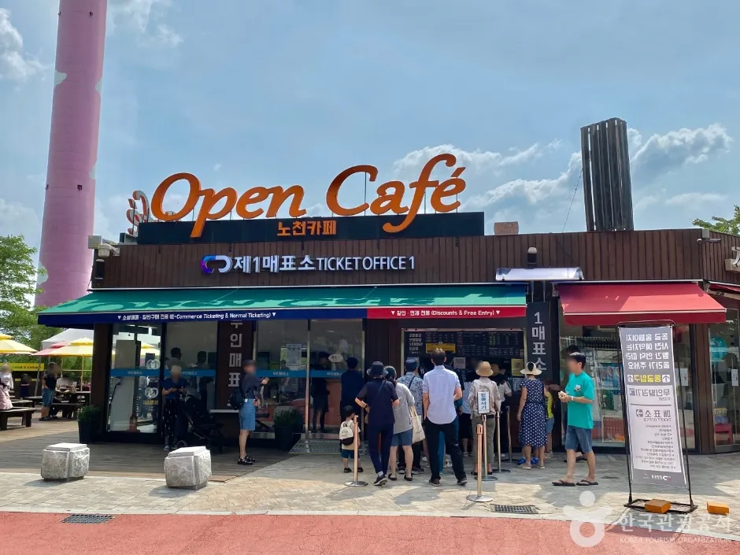
▲ 제1매표소(Ticket Office 1) 앞. 동굴 입장권은 이런 매표소에서 산다. 낮 시간대 평소 모습이며 축제 때의 모습은 아니다. 사진=한국관광공사
| 항목 | 내용 |
|---|---|
| 정상 운영 시간 | 09:00~18:00, 마지막 입장 17:00(관광 안내 사이트 기준) |
| 휴관일 | 매주 월요일 |
| 성인(관외) | 10,000원 |
| 성인(관내) | 5,000원 |
| 청소년·어린이 | 청소년 5,000원, 어린이 3,000원(관광 안내 사이트 기준) |
| 지역화폐 환급 | 관외 방문객이 성인 10,000원 티켓 구매 시 3,000원 지역화폐 제공(누리집 첫 화면 안내) |
| 문의 | 광명동굴 방문자센터 070-4277-8902 |
| 축제 프로그램 입장 | 한국관광공사 축제 정보에 "무료(동굴 입장료 및 시설 이용료는 홈페이지 참고)"로 표기 |
| 축제 기간 동굴 입장료·18시 이후 내부 개방 | 확인하지 못함 |
10월 16~17일은 금·토요일이라 월요일 휴관과는 무관하다. 다만 상설 운영 시간(09:00~18:00)이 끝난 18:00 이후 동굴 내부 개방 여부는 확인하지 못했다. 저녁에 동굴 안까지 보려는 방문객은 사전에 문의하는 편이 안전하다.
6. 동굴 안 온도와 복장 — 도착하기 전에 정리
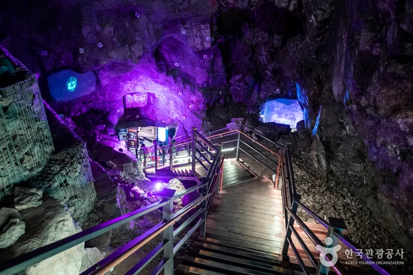
▲ 보라색·푸른색 조명으로 연출된 동굴 안 계단 구간. 바닥이 젖거나 미끄러울 수 있다. 사진=한국관광공사
동굴 내부는 연중 12~13도 안팎이라는 보도가 여럿이고, 관광 안내 사이트는 "연중 12도 이하"로 적고 있다. 10월 중순 밤의 외부 기온에 동굴 내부의 서늘함이 더해지는 셈이다. 이는 공식 수치가 아니라 언론·관광 안내 자료의 일반 설명이다. 같은 안내 사이트는 동굴 안에 화장실이 없다고 적고 있어, 입장 전에 미리 다녀오는 편이 낫다.
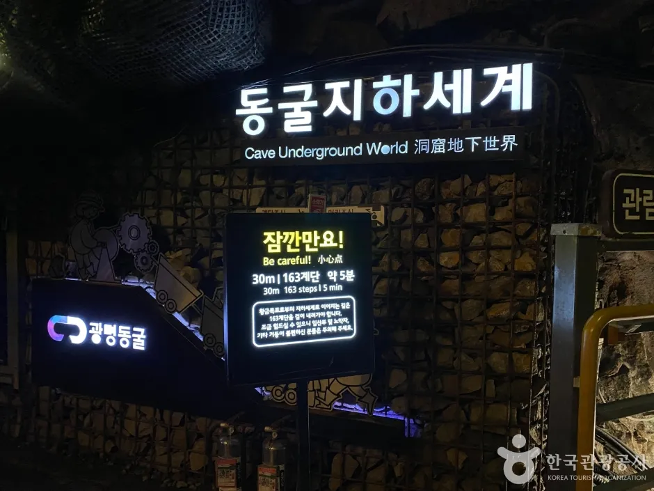
▲ 동굴 지하세계 구간 안내판. 야간 조명 아래에서 계단 수와 주의 문구를 확인할 수 있다. 축제 때가 아닌 평상시 모습이다. 사진=한국관광공사
| 항목 | 이유 |
|---|---|
| 긴팔 겉옷 | 내부 12도 안팎, 야외 저녁 기온도 낮다 |
| 바닥이 미끄럽지 않은 운동화 | 동굴 계단·경사 구간이 많다 |
| 보조 배터리 | 사진·영상 촬영과 주차장 위치 확인에 쓴다 |
| 담요·핫팩(선택) | 드론쇼를 야외에서 서서 기다리는 시간이 길 수 있다 |
| 손이 자유로운 가방 | 계단·좁은 통로에서 안전하다 |
7. 혼잡 시간대와 야간 연계 코스
공식 혼잡 시간대 발표는 확인하지 못했다. 다만 경기신문은 광명도시공사 보도자료를 인용해 "2025년 기준 연간 방문객의 46%가 7~8월에 방문했다"고 전했다(여름 성수기 연장 운영 안내 기사). 세계비즈는 시 관계자 말을 인용해 성수기 방문객이 평일 약 2,900명, 주말 8,000명 이상이라고 보도했다. 두 수치 모두 여름 동굴 관람객 이야기여서 10월 빛 축제 혼잡과 직접 비교할 수는 없다. 이번 축제 두 날은 금·토요일 저녁이라 일반적으로는 드론쇼 시각 전후가 가장 붐빌 가능성이 높다. 이는 공식 자료가 아닌 추정이다.
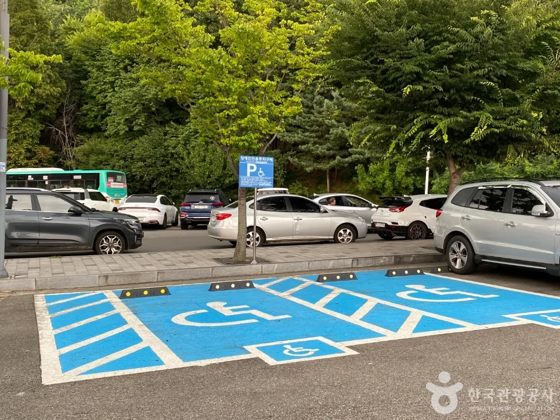
▲ 광명동굴 주차장 한쪽의 장애인 전용 주차구역과 주차된 차량들. 축제 당일 혼잡 모습이 아니라 평소 낮 풍경이다. 사진=한국관광공사
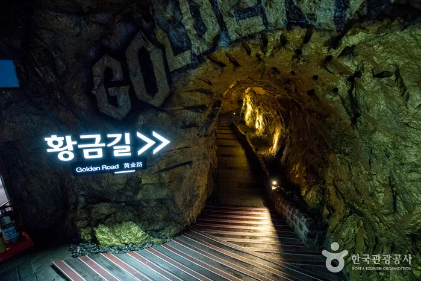
▲ "황금길" 구간. 광명동굴은 폐금광이라는 이력을 연출에 활용한다. 사진=한국관광공사
| 시간대 | 추천 행동 | 비고 |
|---|---|---|
| 11:00~15:00 | 동굴 관람, 체험존(~18:00) 이용 | 상대적으로 한산할 가능성(추정) |
| 15:00~18:00 | 푸드존·버스킹, 주차장 이동 정리 | 제2주차장 푸드존 영향 확인 필요 |
| 18:30~19:30 | 드론쇼 관람 위치 선정 | 1회차 전 위치 확보 유리(추정). 16일은 개막식(19:00) 중 19:30 드론쇼가 이어진다 |
| 쇼 종료 직후 | 출차 혼잡 | 20~30분 늦춰 이동(추정) |
수도권에서 야간 행사를 더 보고 싶다면 앞서 정리한 기사가 참고가 된다. 호수 야경은 평택호 물빛축제 가이드에서, 성곽 야간 드라이브는 수원화성문화제 야간 드라이브에서, 서울 도심 야간 행사는 서울로7017 국화 전시 기사에서 볼 수 있다. 다만 각 행사의 일정은 이미 지났거나 10월 16~17일과 겹치지 않을 수 있으므로, 같은 날 묶어 가려면 해당 기사의 날짜를 먼저 확인하자.
| 장소 | 성격 | 내부 기사 |
|---|---|---|
| 평택호 | 호수 야간 조명·관광지 | 평택호 물빛축제 기사 |
| 수원화성 | 성곽 야간 조명·문화제 | 수원화성문화제 야간 드라이브 기사 |
| 서울로7017 | 도심 보행길 국화 전시 | 서울로7017 국화 기사 |
ℹ️ 연계 코스를 짤 때
이 글은 광명동굴에서 위 장소까지의 소요 시간이나 같은 날 묶어 가는 동선을 공식 자료로 확인하지 못했다. 이동 시간은 내비로 직접 확인하고, 21:00 종료 이후 귀가 시간까지 감안해 일정을 잡자.
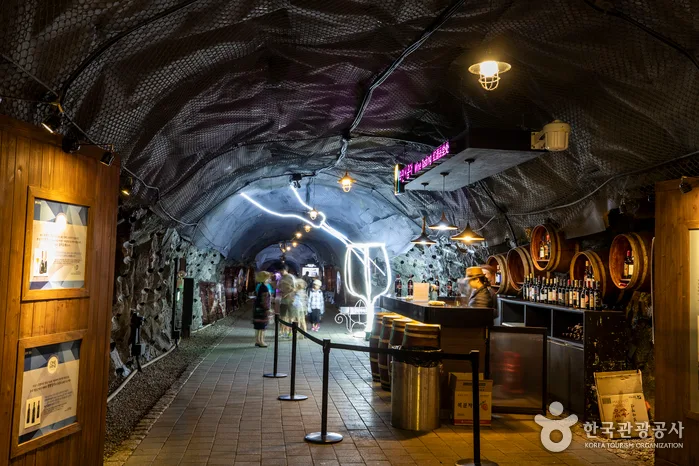
▲ 와인 바와 조명이 어우러진 동굴 안 통로. 야간 행사 전후에 둘러볼 수 있는 상설 구간이다. 사진=한국관광공사
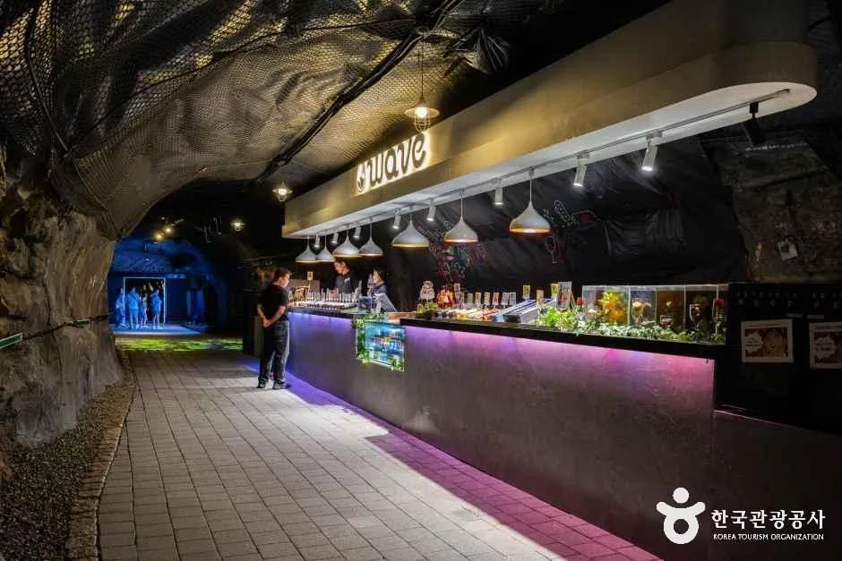
▲ 동굴 속 문화공간 "웨이브(WAVE)"의 바 카운터. 이용 시간은 확인하지 못했다. 사진=한국관광공사
✅ 출발 전 체크리스트
· 축제 10/16(금)~17(토) 11:00~21:00, 개막식 16일 19:00(축제 프로그램 입장 무료로 안내, 동굴 입장료는 별도 확인)
· 드론쇼 16일 19:30·21:00, 17일 19:00·20:40(보도 기준, 포스터와 다를 수 있음)
· 내비: 광명동굴(가학로85번길 142), 제1·2주차장 중·소형 3,000원, 제3주차장 최초 30분 800원
· 주차 감면: 전기·하이브리드·경차 50%, 장애인·유공자 100%
· 제2주차장은 푸드존으로 쓰일 예정, 주차 여유가 줄 수 있음
· 대중교통: 철산역 2번 출구 17번 버스, KTX광명역 8번 출구 77번 버스, 자율주행 셔틀은 10월 7일 운행 예정(시간표 미확인)
· 축제 기간 동굴 입장료, 18:00 이후 내부 개방, 셔틀 시각은 문의 070-4277-8902·누리집 확인
8. 요약
제4회 광명동굴 빛 축제는 10월 16~17일(금·토) 11:00~21:00 광명동굴 일원에서 열리며, 개막식은 16일 19:00, 드론 1,000대 라이트쇼는 16일 19:30·21:00, 17일 19:00·20:40이다. 주제는 "빛의 숲, 깨어나는 생명"이고 광명도시공사가 주최한다. 야외 프로그램으로 업사이클링 체험존, 제2주차장 푸드존, 빛의 광장 버스킹이 보도됐다.
자차 방문은 내비에 "광명동굴(가학로85번길 142)"을 입력하고 제1·2주차장(중·소형 3,000원)이나 제3주차장(최초 30분 800원)을 쓴다. 제2주차장이 푸드존으로 쓰이므로 주차 여유가 줄 수 있어 일찍 도착하는 편이 낫고, 대중교통은 철산역 17번 버스와 철산역~동굴 자율주행 셔틀(10월 7일부터 운행 예정, 시간표 미확인)이 있다. 동굴 안은 연중 12~13도 안팎이라 겉옷이 필수다. 축제 프로그램 입장은 무료로 안내되지만, 축제 기간 동굴 입장료와 18:00 이후 내부 개방 여부, 올해 주차장 수용 대수·요금 변경, 셔틀 시각, 우천 시 대응은 확인하지 못했다.